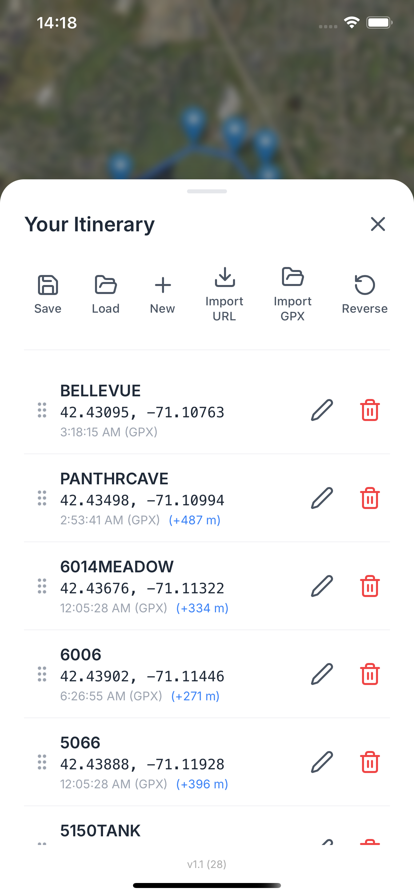
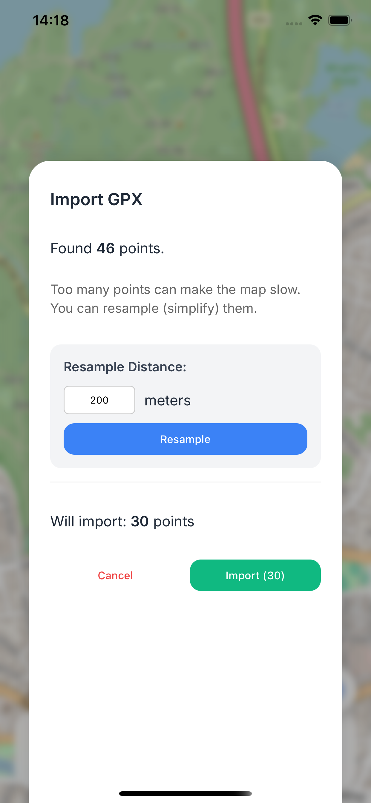
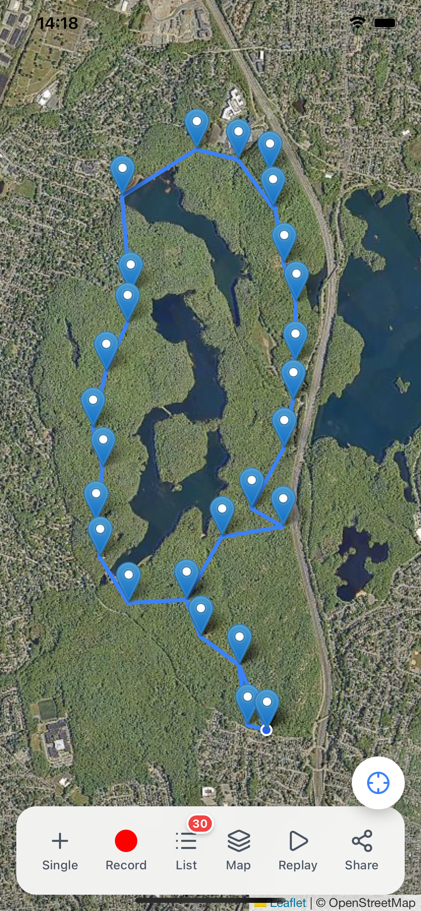
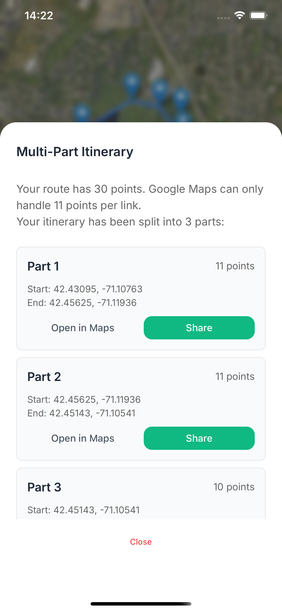

See it in action











Your data never leaves your phone. All itineraries are stored locally. We have no servers and no access to your location.
No complex files (KML/GPX). We just generate a standard Google Maps URL containing your route points. Share it instantly!
Accurately track your movement in real-time, whether you are driving, cycling, or walking.
Import existing GPX files to view and manage your path history. The app automatically resamples the number of points for optimal performance.
Split long tracks into manageable multi-sub-itineraries for better organization and analysis.
Free version: up to 10 points per itinerary. Upgrade to Pro for just $1 lifetime and get unlimited points forever!